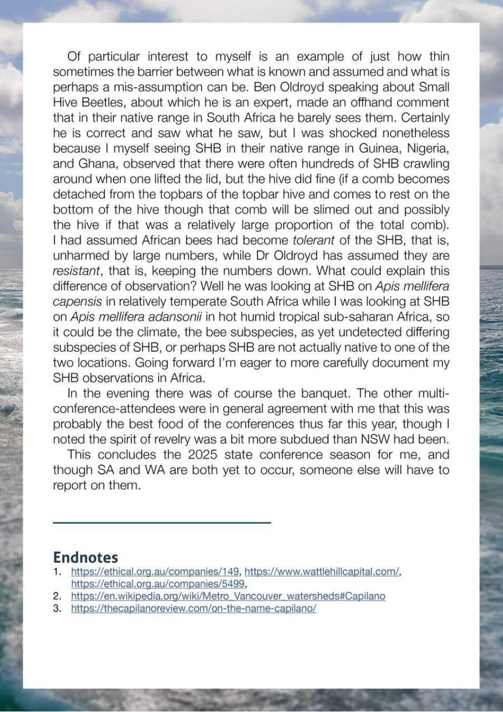

Of particular interest to myself is an example of just how thin
sometimes the barrier between what is known and assumed and what is
perhaps a mis-assumption can be. Ben Oldroyd speaking about Small
Hive Beetles, about which he is an expert, made an offhand comment
that in their native range in South Africa he barely sees them. Certainly
he is correct and saw what he saw, but
I was shocked nonetheless
because
I myself seeing SHB in their native range in Guinea, Nigeria,
and Ghana, observed that there were often hundreds of SHB crawling
around when one lifted the lid, but the hive did fine (if
a comb becomes
detached from the topbars of the topbar hive and comes to rest on the
bottom of the hive though that comb will be slimed out and possibly
the hive
if that was a
relatively large proportion of the total comb).
I had assumed African bees had become tolerant of the SHB, that is,
unharmed by large numbers, while Dr Oldroyd has assumed they are
resistant, that is, Keeping the numbers down. What could explain this
difference of observation? Well he was looking at SHB on Apis mellifera
capensis in relatively temperate South Africa while I was looking at SHB
on Apis mellifera adansonii in hot humid tropical sub-saharan Africa, so
it could be the climate, the bee subspecies, as yet undetected differing
subspecies of SHB, or perhaps SHB are not actually native to one of the
two locations. Going forward I’m eager to more carefully document my
SHB observations in Africa.
In the evening there was of course the banquet. The other multi-
conference-attendees were in general agreement with me that this was
probably the best food of the conferences thus far this year, though
noted the spirit of revelry was a bit more subdued than NSW had been.
This concludes the 2025 state conference season for me, and
though SA and WA are both yet to occur, someone else will have to
report on them.
Endnotes